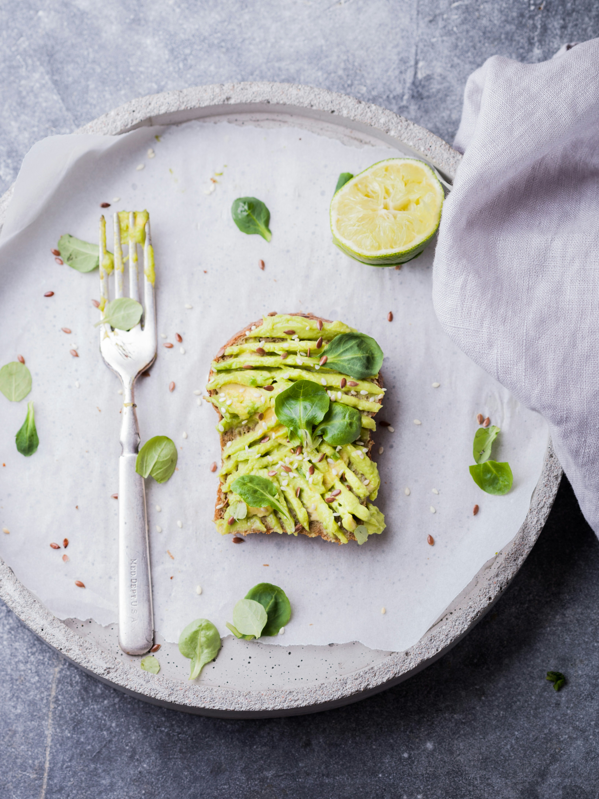

Vegan Avocado Toast

Description
Avocado toast is a deliciously hearty breakfast. If you are not vegan, you can serve fried eggs on top for a delicious vegetarian meal.
Ingredients
- 4 slices whole-grain bread
- 1 avocado, halved and pitted
- 2 tablespoons chopped fresh parsley
- 1 ½ teaspoons extra-virgin olive oil
- ½ lemon, juiced, or to taste
- ½ teaspoon salt
- ½ teaspoon ground black pepper
- ½ teaspoon onion powder
- ½ teaspoon garlic powder
Steps
- Toast bread in a toaster or toaster oven.
- Scoop avocado into a bowl. Add parsley, olive oil, lemon juice, salt, pepper, onion powder, and garlic powder; mash together using a potato masher. Spread avocado mixture on top of each piece of toast.